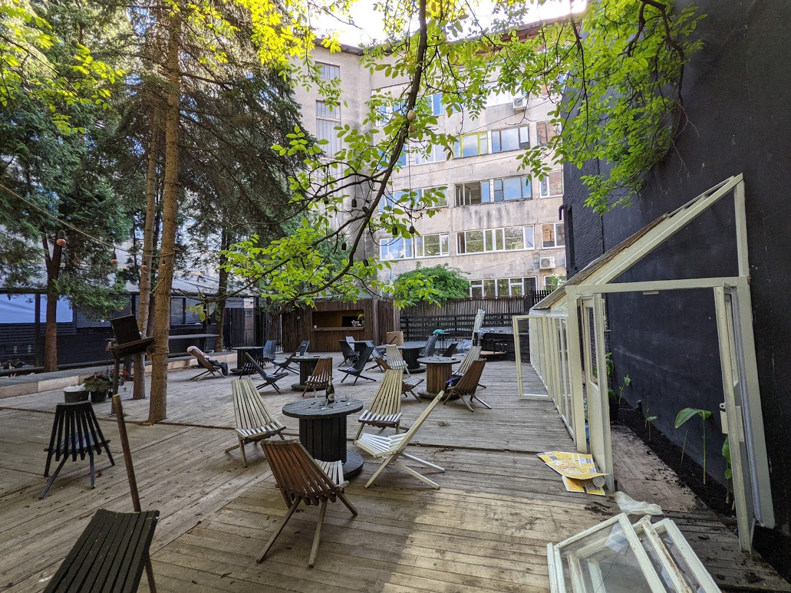
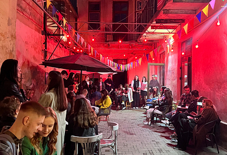

Ґанок
місце де можна попити кави,поїсти та потанцювати.

Flat5
Місце на площі ринку,куди не кожен знає прохід.
Ґанок є частиною історичної споруди, яка є частиною колишнього Львівського заводу радіоелектронної медичної апаратури.
Територія поруч з ним побудована у 1940-х роках і є одним із небагатьох збережених фрагментів заводу, який був закритий у 1990-х роках.
Flat5 - це кав'ярня, розташована на площі Ринок, 39.
Вона була заснована у 2021 році і є одним із найпопулярніших закладів у місті.
І останнє. ВНС.
Сервера згоріли.